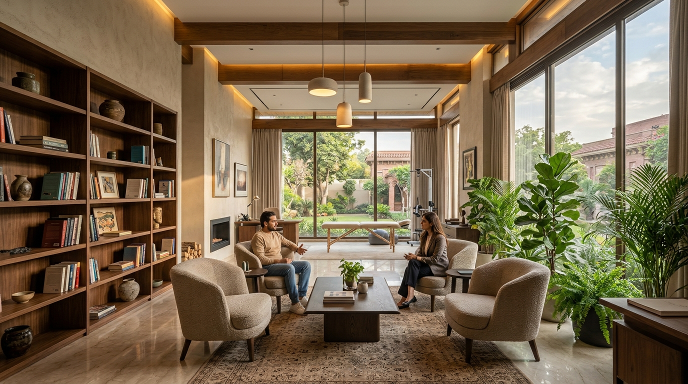

⭐ Top Trusted ChoiceBest Rehab Centre in Lahore: Why Nidaa Clinic Is a Trusted Choice for Addiction Recovery
Discover why NiDAA Clinic is recognized as the best rehab centre in Lahore. Medically supervised detox, psychiatrist-led recovery by Dr. Bilal Warraich, dual diagnosis care, and 12-month aftercare.